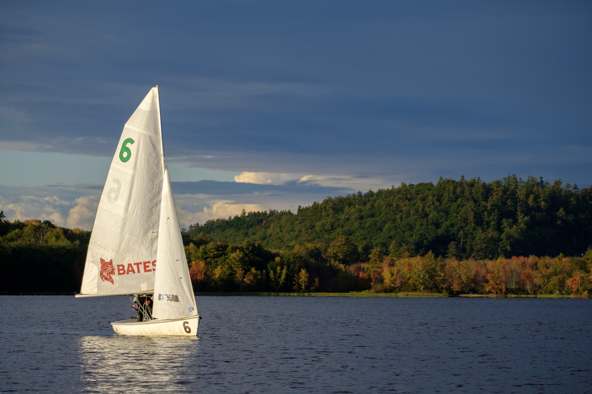

Back to homePhotos
46 photos from practices, regattas and team days on Taylor Pond. Select any photo to see it larger.

Back to home46 photos from practices, regattas and team days on Taylor Pond. Select any photo to see it larger.